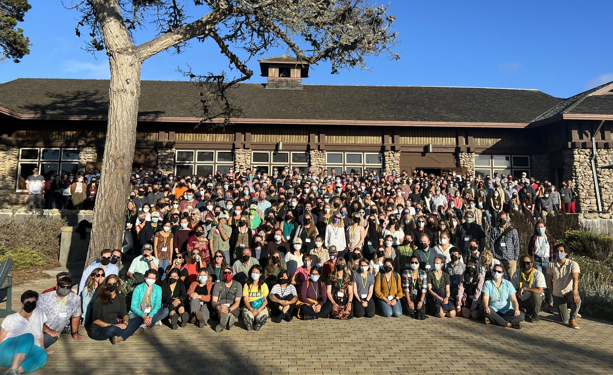
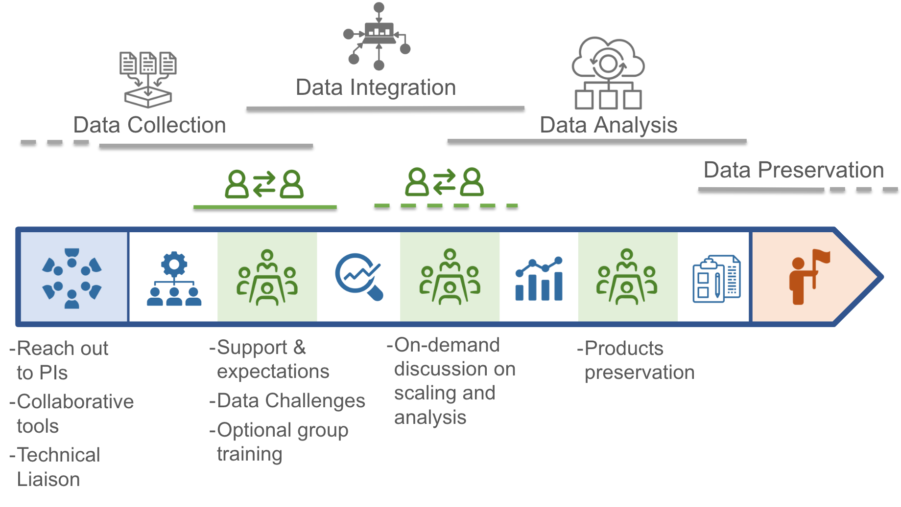

Scientific Computing Support


What We Do
The Scientific Computing team is a small (but mighty!) team of data analysts/scientists supporting Long Term Ecological Research (LTER) Network synthesis working groups. The LTER Network Office (LNO) regularly issues calls for synthesis working group proposals, which are open to scientists from within and outside of the LTER Network. We provide modern technological infrastructure to support analytical, computing, or network-based needs for these synthesis working groups.
We are housed at the National Center for Ecological Analysis and Synthesis (NCEAS). In addition to the technical support during your visit at NCEAS, our scientific computing team is available in-between visits to discuss and advise on data science and scientific programming tasks, such as:
- Structuring and integrating heterogeneous datasets
- Writing code to wrangle, analyze, model, or visualize the data your group has already collected
- Designing workflows, scripting best practices for reproducible science, and reviewing code
- Helping you get set up on NCEAS’ server
- Preserving and promoting your products on the Web - from derived datasets and terminological glossaries/vocabularies, to scripts, model codes, and interactive “web applications”
- Offering workshops on new skills or programs
Depending on your team’s preferences, we can operate on a spectrum of independence ranging from complete self-sufficiency after initial definition of task scope to coding together with your team.
Contact our team with your requests at scicomp@nceas.ucsb.edu
